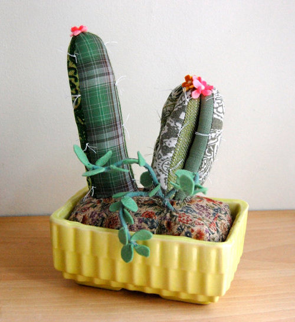

[Plants] 植物殺手的福音
|  |
| 原圖出處 : Design*Sponge |
{kind=link}
以
前曾經發生過一件糗事，當我第一次在學校宿舍種植一株鼠尾草小盆栽，看到鼠尾草都垂下樹葉，我很天真開心地和我的高中同學報告我的鼠尾草成長心得如下 :
“我的鼠尾草好可愛，好像有心事一樣，都垂下樹葉來了! “
結果我超有智慧的高中同學冷冷地說道 : “那是因為妳沒有澆水吧…”
我想如果鼠尾草能夠為自己發聲，一定也想發出 “我終於得救”的歡呼聲吧 !
而我的植物殺手的歷史，可以追溯到我朋友送我的兩盆盆栽 :
 |
 |
左邊是愈長愈高，卻一直不知道該換盆的 “我快把我的腰給折斷”的不具名可憐盆栽。右邊則是”救命呀!我不要跟我兄弟一樣枯萎!”的紅色小辣椒。隨著歲月的增長，我的受害者名單愈來愈長，其中包括了不知道我的厲害的朋友，而送給我 “袋內花園” (Garden in a bag)，當養出小小的初芽，興奮一陣子後，還來不及長高長大，就銷香玉殞了 ! (默)
但是如果妳和我一樣 ，絲毫缺乏照顧植物的天份。那麼恭喜妳，一個適合不需要妳煩惱要澆多少份量的水，要曬多少的太陽卻又賞心悅目的植物終於出現了 ! 解決方法就是上 Etsy 購買 Sian Keegan 的填充花盆。看看他們，是不是既可愛又方便呢 ?
 |
| 原圖出處 : Design*Sponge |
看著這些乍看像似真的盆栽一樣的填充盆栽。連裝飾的盆子都別出心裁，包括了馬克杯和盆栽常見的陶瓷器皿。因為不需要換水和培養土壤，擺在室內又不用擔心生長蟲子和蚊蠅，只是雖然養不死，但也養不大。少了修修剪剪的樂趣，也少了春暖花香的味道，怎麼說還是取代不瞭真正的盆栽呀 ! 雖然這麼說，但是我再繼續在我的受害者名單上增添新的植物，說什麼植物協會的人可能也要我放棄園藝這條路，嚴重考慮購買填充植物吧 !
 |
| 原圖出處 : Design*Sponge |
最近因為看到 pea 在 google+ 放上她收集的心豆照片(又叫倒地鈴)，最後演變成她家裡兩隻可愛的貓咪要學龍貓而我家的 Oreo 要學熊貓跳發芽舞的對話。無論心豆的未來如何，都非常謝謝 pea 熱情的千里送豆。因為最近非常的忙碌，再加上不願意把這些可愛的豆子入土為安，所以距離入土儀式還非常遙遠，但是想起小小的嫩芽在心狀的種子上冒出的畫面，就像那維持不易剛成長的友誼般，脆弱但意義非凡。
 |
| 感謝 pea 千里送心豆! <3 |
[Australia] 一個人和相機在南半球旅行 - 蒸汽小火車
 |
| 好閃亮的火車頭呀! |
火車快飛，火車快飛，越過高山，飛過小溪，不知走了幾百里。與火車有著革命情感的我，在台北機廠要走進歷史前，便曾和王家攝影團女生組相約去瞻仰最後一面。到了澳洲，當然更不會錯過在墨爾本近郊，有著百年歷史但是飛不大起來的蒸汽小火車 — Puffing Billy。
其實 Puffing Billy，本來是泛指在 1813 年由英國工程師 William Hedley 等人建造的蒸汽小火車。也是現存的蒸汽小火車類型中，最古老的一種。靠著煤礦當作動力的 Puffing Billy，車如其名一般，火車頭邊吐出濃密的白煙，邊笨重地在樹林間踱步，就像要搖晃整個樹林來宣告自己的存在般發出 “慶嗆~慶嗆～”的聲音前進。
靠著一群熱心的志工和本身小本經營，位在墨爾本市區近郊約一個小時車程的丹頓農山區，保存良好的 Puffing Billy 蒸汽小火車，除了聖誕假期外，每日辛勤地在 Belgrave 和 Gembrook 之間的蜿蜒鐵道上嘟嘟的行走。因為蒸汽小火車真的非常地緩慢，全長約莫二十五公里的路程，竟要花將近兩小時才能走完，這可以說是已經習慣高速鐵路的現代人，完全無法理解的悠閒。而這緩慢的二十五公里的路程，其中又以 Belgrave 到 Lakeside 最為熱門。你可以在 Belgrave Puffing Billy 火車站購買來回的票劵，或是像我一般，有勇無謀的跳上班次相當稀少的 695 公車，被司機在一處小鎮丟下後，一路靠著厚臉皮問出往 Emerald Lake Park 的方向，最後眼睜睜看著班次一樣稀少的蒸汽小火車，吐著白煙，慢慢駛遠。
 |
| Oh! No! 火車不等小愣就先走了! |
 |
 |
| 看到澳洲人用 rubbish 稱呼垃圾，就深覺果然踏上了大英帝國的屬地了! |
被卡在中間動彈不得的 Lakeside Station |
在 Lakeside 火車站，蹉跎了大約一個小時的寶貝光陰，都快要不知道該幫小愣擺甚麼姿勢拍照時，我引頸期盼的蒸汽小火車就嘟嘟的進站了。興奮之餘，更沒忘了趁著火車靠站的停留時間，趕快拎著 Oreo 的狗頭跑到整台火車的重點 – 蒸汽火車頭前照相。而這趟旅程的司機先生和管理票務的車掌爺爺，都活像一起和蒸氣小火車從二零年代保存下來的人物，讓人真有時光錯亂的感覺。
 |
| 慈祥和藹的司機先生，和看起來操作非常複雜的火車頭! |
 |
| 好心的票劵車掌爺爺還提醒我這個攝影狂，什麼時候火車會來個大轉彎! |
沿路上的景色，大概是像這樣 :
 |
| 周邊的景色不是樹林，就是樹林!有時候會有草地 (草地版本的照片)! |
而全程的高潮，應該就是通過 Monbulk creek 木頭棧橋，一般所熟悉的乘車規則，頭手不得伸出車外，在 Puffing Billy 上完全不適用呀 ! 因為蒸氣小火車的車廂內真是非常簡陋，所以大人小孩們一坐進火車，就迫不急待的想要坐上窗台，讓迎面帶些涼意的春風拂面，也增加些許刺激感。
 |
| 好刺激的木頭棧橋呀! |
這趟旅程，除了筆直的樹木，青蔥的草地，就屬蒸汽小火車排放的濃濃二手煙最為振奮人心。在出發前，所有對於蒸氣小火車的熱情想像，完全遺漏了味道這一項。所以當我坐在後面的車廂，吸著一路從火車頭飄散到後方的白煙，真想掩鼻跳車離開呀 ! 也難怪在哈利波特電影裡，主角們在也嘟嘟冒著裊裊白煙的霍格華茲列車，從來就不想開窗呀 ! 不過有了這次在澳洲搭蒸氣小火車的初體驗，讓我也好想挑戰在蘇格蘭高地上奔跑的霍格華茲列車(而且這座列車上有窗戶! 還有寬敞的桌椅!還有包廂!) 。不過在那之前，還是讓我拿著在 Puffing Billy 小火車的照片好好回味一下吧!
 |
| 陽光美女工作人員!每個在這裡工作的人員似乎都很快樂的樣子! |
延伸閱讀 : Rene’s Project 365 [Week 31] B&W Portrait / Half Week of Australia
旅遊資訊
Puffing Billy 蒸汽小火車
開放時間 : 小火車班次有限，請查詢當季班次表
票價 : Belgrave to Lakeside $24 (single), $41 (return)
地址 : 1 Old Monbulk Road, Belgrave 3160, Victoria, Australia
[Scone] 那些都是司康的午後時光
 |
| 讓我們掌聲歡迎最勇而無畏的試吃者 – Oreo |
當朋友在今年夏天 Meww 向我表達想念在 Smith & Hsu 享用美味司康搭配酸甜檸檬蛋黃醬的經典英式下午茶，從未做過司康的我便自告奮勇的表示，要在家中試做。心中想的，當然是這個完全不需要酵母發酵的英式餅乾，應該是相當容易就上手。想不到這個小小的念頭，卻導致一個又一個血淚交織的都是司康的午後時光 …
一開始我照著 Carol 的司康食譜，按圖索驥的操作，一直到步驟五 …
“混合完成的麵團用保鮮膜包起,略整成方型放冰箱 冷藏 30分鐘”
眼睛看著冷藏，急性子的我心裡卻想著冷凍。心想，要等 30 分鐘真是太辛苦了，於是就把混合麵團，用保鮮膜包起，完全沒有查覺異樣的送到冷凍庫去。其結果當然是從冷凍庫拿出的混合麵團，雖然一開始是硬梆梆的，但是在炎熱的夏天，麵團馬上解凍，釋出了水份，讓整個麵團都黏答答的。接下來的步驟，就像在捏陶土一般，勉強整出了三角麵團後，就送到烤箱去了。最後的成果，就如下圖，充滿了疙瘩 :
 |
| 其貌不揚的司康和配合演出的果微醺 |
 |
| 其貌不揚的司康和味道尚可的檸檬蛋黃醬 |
 |
真糟 ! 狗字典裡找不到挑食這個詞彙的 Oreo，以及以來者不拒之姿狼吞虎嚥所有除了狗飼料以外的食物，果然一副委婉一點就是”這是什麼鬼東西”或是直接一點 “妳想毒死我呀!” 的臉來表達她對其貌不揚的司康的意見。
幸好，我這個人沒有甚麼長處，就是對吃特別執著。經歷連 Oreo 都不願賞臉的其貌不揚司康，我又再接再勵重新參考了4F Cooking Home 的口袋司康食譜，於是就到了我司康午後人生的第二階段 -
 |
| 沒有身材的司康和小愣與背景配合演出的白桃拿鐵以及母親私釀的酵素 |
這應該沒有人覺得長的像司康吧 ! 怎麼會這麼扁平呢 !
 |
| 沒有身材的司康獨照 |
不過，家人都說味道還不錯。這也算沒有身材的司康唯一感到欣慰的地方了 ! 經過了兩次失敗，我上網發現大家試做幾乎都是一次就上手的美味又豐滿的司康，我不禁開始懷疑，做司康這件事，就像我人生的其它事情一般，愈是簡單愈是容易失敗呀 ! 然而， 4F Cooking Home 的網頁最近又公佈了英式司康的詳細做法，相信對吃一向是愈挫愈勇的我，一定有朝一日也可以做出名副其實，身材豐滿的司康的 !
[Australia] 一個人和相機在南半球旅行(還有小三)
 |
| Flinders Street Station, Melbourne |
當我說，我要一個人去澳洲旅行時，認識十多年的老友們，紛紛投以關注的眼神，擔心地問我，是否遭遇了什麼打擊？而年輕的同事小妹妹們則略帶羨慕的口吻稱讚我好勇敢，腦海立刻編織著背包客獨立自主的背影。可是，事情的真相，其實不是那一再讓人心碎的現實人生，也不是突然生出的莫名勇氣，而是…
折價的機票！沒錯！事情就是這麼簡單！沒有曲折離奇的心路歷程，也沒有浪漫感人的勵志動機。一切都是因為得知想去多年的西班牙，在今年又不能成行後，剛好亞洲航空 ( Air Asia )又推銷單程到墨爾本萬元不到的折價機票下，完全失去理智下徹夜搶購，在得標後，我大概花了三秒鐘思考自己即將一個人在異地旅行這件事，大部分的時間都很得意我花不到台幣兩萬元搞定來回機票的事，在家裡甚至蹦蹦跳跳地，馬上就把不能去西班牙看我最愛的德比球賽忘地一乾二淨了！
接著就是長時的等待，二月就訂好的促銷機票必須在十月出發，這段時間雖然整天對著網路上墨爾本和雪梨的遊記做白日夢，還是沒有自己即將一個人旅行的危機感。其次，這次也不算是我第一次一個人旅行，只是從前未曾有一個人超過五天的紀錄。況且，一個人旅行會比一個人在國外生活難嗎？所以，我又很沒危機感的將我的行程排成日出而作，日落還不休息的超人行程。（事實證明，我原先排定的行程，還真的只有會飛的超人可以完成呀！）
 |
| Cross section between George Street & Market Street, Sydney |
最後會感冒，還會賴床的凡人行程如下：
10/4/2012 台北->吉隆坡->墨爾本
10/6/2012 大洋路 ( Great Ocean Road ) Day Tour
10/8/2012 Sovereigh Hill -> St. Kilda Beach
10/10/2012 曼麗海灘 ( Manly Beach ) -> Royal Botanic Gardens ( Mrs Macquaries Point )-> Art Gallery of NSW ->Royal Botanic Gardens ( Government House )-> Opera House
10/12/2012 Featherdale Zoo -> Fish Market -> 達令港 ( Darling Harbour ) 水族館 ( Sydney Aquarium )
夜宿: Sydney Central YHA
10/14/2012 Queen Victoria Market ->The Block Arcade/Royal Arcade->Eureka Skydeck 88->Crown Casino
 |
| Phillips Island, Melbourne |
而自己一個人旅行的真相倒底是什麼？會不會桃花豔遇特別多呢？被人搭訕的次數是增加不少，不過大多數都是捧著相機來找我，請我幫忙拍全家福或個人沙龍。如果沒有找我拍照的，就是來問路的。如果沒有來問路的，就是上餐館，獨自坐在酒吧前，身旁坐著一樣隻身單影的男人，找我一起研究菜單。我唯一堪稱奇遇的經驗，就是在墨爾本的一家西班牙餐廳，和一個從雪梨來墨爾本出差的單身男子閒聊。不過，當我很興奮請他介紹雪梨的餐廳景點時，他卻呈現腦袋一片空白狀態，當下覺得手機裡孤獨星球的 app 好像好用一點。
雖然是一個人，但是有我的相機和新購入的 Tamron 18-200 mm 旅遊鏡陪我記錄旅程的一切。記得第一晚在墨爾本，我佇足在 Flinders Street Station 的街角，看著來往穿梭的車潮，我拿起了我的相機，在十字路口旁的人行道，架起了一直背在身上相當有份量的小三 (就是三腳架啦 ! )，企圖想要捕捉一個古老建築矗立在現代城市的光影之中的超現實感。我一次又一次的調整鏡頭，按下快門，檢視拍攝的結果，在許多次不滿意的嘗試後，最後不得不和時間妥協，花了將近一個小時在街頭，最後只留下三張堪稱上眼的照片，而其中一張就是第一張夜晚車潮中的 Flinders Street Station。而這樣恣意把時間琢磨在拍照上，大概也只有一個人旅遊才能實現的特權吧 !
 |
| Darling Harbour, Sydney |
最後，在出發前，我的哥哥，也就是 Oreo 唯一狗爪認證的主人，交付我一個任務，就是學著 “型男飛行日誌”裡帶著夫妻紙板到處拍照的主意，我隨身攜帶著 Oreo 小時的狗頭照片，再做成紙板後在澳洲景點到處用臉書打卡拍照。所以，我的 Project 365，很快就變成充滿著誤植狗頭的澳洲行。在某種意義上，Oreo 也算與我共遊澳洲啦 !
 |
| Opera House, Sydney |
而每一天的旅程，我最感到開心的事，就是在轉車等待的時間，或是回到旅館休憩趴在床上寫明信片的時候。我在澳洲的每一天，都像是一個新的冒險，有這麼多不一樣的人事物，有這麼多美麗又驚人景色，我來不及感覺一個人旅遊的寂寞，我迫不急待要告訴在遠方的朋友們，請你們一定要來這裡親自感受。有整個陌生卻又新奇的城市作伴，孤獨彷彿褪去了苦澀的外衣，相伴的是你最澄澈的思緒去感受，去體驗。其實，一個人旅行一點兒都不難 ! 還意外地很有趣呀! (不過，我想花了 50 澳幣，辦了手機上網也是有差啦 ! 哈哈 ! )
 |
| Yarra River, Melbourne |
照片說明 : 看吧 ! 每張都是我玩到日落都捨不得休息的證據 !
[Sunday Afternoon] 幸福的小角落 - 自然醒

能夠總是睡到自然醒，能夠在日光照耀下依舊感受被窩裡的溫度，能在偷得的慵懶時光裡，享受不匆不忙的悠閒，一直是我打從心底裡奢望的小小幸福。所以在 Tina’s 美好生活和迴紋針 – 食攝幸也，介紹自然醒咖啡公寓時，自然就對這間從名字就散發出幸福氛圍的咖啡館感到好奇，便邀了幾位許久不見的朋友來此地坐坐。
身為同樣有著招財店貓的個性咖啡館，從前拜訪的路上撿到一隻貓，走的是隨意的文青路線，而貓咪的友達則創造出童話般的氛圍，自然醒決意保留復古簡約的風格，店裡有的是懷舊的縫紉機和大同電視。
 |
| 店貓 : 發現吃飯不付錢的食客 (不付錢的食客應該就是店貓你吧!) |
店貓當天的活動範圍很廣，可以說整店趴趴走，但是當天下來一天的生活大概就像下面這樣的 :
 |
 |
 |
 |
進行哲學性思考 (什麼!明明就在打瞌睡) | 精打細算地招攬生意(精明貌)

到的時候，正是下午，面對喧鬧的街道，正好是向陽的一面，透過兩塊大玻璃窗，採光充足，金黃色的陽光灑落一地，也將在窗邊充當擺設的店貓，身體烘地暖呼呼的。
 |
 |
餐點供應不多的自然醒，只有墨西哥雞肉捲和肉桂味相當重的蘋果派可供選擇。自然醒畢竟不是一個讓妳解放味蕾，大快朵頤的地方，她的樸質和溫馨，讓朋友和我盡情享受彼此的陪伴，朋友談起再度回學校學習的生活，而我們則笑著說她總是那麼青春勇敢。而從前的種種和未來的憧憬都凝聚在這個小小角落裡，在歡樂的言語之中。
 |
| 切開就可以聞到香濃的肉桂香 |
時間畢竟流逝太快，外頭曾經光亮的街道，只剩下路燈點亮安靜的夜，一直活潑好動的店貓也終於露出一點倦容，互道聲再見後，我們離開這個簡樸誠懇的小角落。
慵懶如自然醒，這裡有我奢望的小小寧靜，極適合一個人拿著書，或者什麼也不帶上，和店貓面對面一起吹鬍子瞪眼吧 !
 |
| 不免俗的隨著大家一起拍水瓶 |
店家資訊:
自然醒咖啡公寓
北市大安區和平東路二段157號2F
02-27096066 13:00-23:00 ，週二休
[Australia] 終於輪到我出去玩啦!
 |
| 準備! 出發! (等等,背書包那是怎麼一回事?!) |
終
於輪到我出去玩啦 ! 沒錯 ! 就是這周四啦 ! 撒魯先生跟小愣已經準備好了 ! 撒魯先生的行囊只有一只書包!相信不會被航空公司控告行李過重 !
部落格將停止更新兩周 ! 希望能從雪梨跟墨爾本帶回來許多好的照片，最重要的是美好回憶囉 !
- 重新看了澳大利亞導演，澳大利亞首席男女明星，休傑克曼和妮可基嫚主演的，澳大利亞 ! Checked ! (可是明明跟我要去的兩個城市完全沒有關係呀!)
- 在 Google 地圖上標滿未來的足跡! Checked !
- 在 iPhone 裡裝滿了 Coldplay 和 Keane 的歌! Checked!
- 除了雪梨和墨爾本的城市指南，更要帶上一本會讓自己食指大動的書 (因為聽說澳洲只有 Fish n’ Chips)! 這次是巧克力情人 ! Checked !
- 準備一顆輕鬆愉快的心! Checked !
哈囉 ! 南半球 ! 我要來啦 !
 |
| 小愣和撒魯先生一起手牽手，面對未知的旅程。 |
[Keane] 希望與恐懼
 |
|
圖片原出處 : Keane FaceBook Fan Page Tom at Soundcheck in Taipei. RH |
還記得，那是剛到美國的第一年暑假，我坐在有著玻璃落地窗的圖書館裡，耳裡塞著耳機，反覆聽地是 Keane (基音)樂團的第二張專輯，”Under the Iron Sea” 裡的歌曲。音量開到最大，彷彿世界只剩下主唱 Tom 清亮又純粹的聲音陪伴著我。那時，我的生活像是漂浮在停滯的死海上，絲毫找不到得以著力的平衡點，就像是失去重力般，飄浮，漂流。
Tom 在我耳邊吟著:
“Oh, Crystal Ball, Crystal Ball 喔,水晶球,水晶球
Save Us All, Tell Me Life is Beautiful! 請拯救我們,告訴我生活仍舊美麗!”
一旦你聽到了 Tom 的聲音，你就很難把你的眼光從唱著歌的他身上移開。我就是這樣認識 Keane。經過愛聽搖滾樂的妹妹介紹，我開始注意在電視上經常撥放的單曲，”Somewhere Only We Know” (歌曲資訊連結)，Tom 的歌聲是如此乾淨富有情感，就像在我耳際傾訴一個屬於他的秘密基地般，讓我不禁打了個冷顫。從此，這個被我稱之為療傷系樂團的 Keane，在我的生命就占了一個等同於心靈小站的位置。打開音響，放入 Keane 的專輯，然後任由他們的音樂和 Tom 的悠揚歌聲治癒我有時因為和現實掙扎，而過於疲憊的心靈。

或許小時曾經被霸凌的 Tom，在音樂中也終於找到自己的天賦，所以唱起第一張專輯希望與恐懼 (Hopes And Fears) 裡的主打歌 “Somewhere Only We Know” 特別的有感情。事實上，Keane 的兩個靈魂人物主唱 Tom，和鍵盤手 Tim，是從小長大的朋友。在同學中備受欺負的 Tom，就是 Tim 主動伸出友誼的手，兩人相互扶持一起度過。當我聽到這個故事，心中可以說是大受感動，腦中立刻出現小小 Tom 和小小 Tim，邊手牽著手，邊唱著 “Somewhere Only We Know”，來到全然屬於他們的秘密基地裡，快樂又無憂地彈奏著音樂，現實殘酷的爪牙觸碰不到愛音樂的他們，相伴的就只有彼此動人的旋律和清亮的歌聲，就像我時常躲在他們的音樂裡，即使在明亮的希望也照耀不到的地方，仍舊能喘息著。
 |
| 圖片原出處 : Hot Saas’s Pop Culture Safari |
而在 2012 年 9/22 這一天，實體距離總和我有半個地球這麼遠的 Keane，來到台北開演唱會了 ! 我的心情可以說只能用 “久旱逢甘霖” 來形容呀 ! 將近兩個小時的演唱會，聽著 Tom 唱著一首又一首曾經伴我入睡，或者許多悲傷啜泣的時光，我的內心是激動的，我陶醉著有如美夢成真般的飄然感，卻又帶點不真實。直到 Tom 背上木吉他，在獻唱之前，講了一段關於他如何認識台灣的小故事。他說，他小的時候有許多的玩具，玩具上總有著 “Made In Taiwan” 的標籤，他就是這樣認識台灣的 (所以，真的要感謝老一輩的台灣人創造的台灣奇蹟呀!)。這時，我才真正有真實的踏實感，是的，他們現在就在台灣，在我面前，為我們演唱著。我和數位熱情的歌迷一起，跳躍歡呼尖叫，盡我們所能表達我們對他們的熱愛，也謝謝他們帶來這麼美好的音樂 ! 今天的這個夜晚，因為有你們的音樂，變得不這麼寂寞了。
演唱會有結束的時候，而我的心卻因為他們美妙的音樂和熱情的演出，彷彿又重新換上了新的繃帶，盈滿著感謝和勇氣，走出了演唱會場地。而在那些希望與恐懼掙扎的時刻，我知道，我該拿出哪一片 CD，或是從我雜亂無章的記憶中翻出這一夜的美好。謝謝，因為你們的音樂，讓這個世界變得如此美好。
 |
| 入場蓋上的可愛暴龍章! |
[Taiwan] 那個無法再容納記憶的地方 - 台北機廠

剛
升高中的時候，因為家住地離學校遠，總要搭著搖搖晃晃的火車，到台北車站轉公車到學校。那時，還是留著清湯掛麵的髮型，一個無憂的年代，火車還在地面上轟隆隆的行駛，而火車站裡也沒有一間間光鮮亮麗的餐廳商場。那時，在小小的剪票口旁，總有一個穿著制服的高中男生，等著我。我們一同在簡陋的小火車站，談著剛升高中的興奮心情，一起討論對未來的嚮往，然後分別在不同的火車站下車，奔向屬於自己的不同未來。
幾年後，升上了大學，仍舊在外地求學的我，火車是不可缺少的交通工具。只是我看著火車從地面上轉移了陣地來到了地面下，小火車站轉身為櫥窗林立的商場，聲音仍舊是轟隆轟隆，車廂內仍是搖搖晃晃。而對著火車有著如此濃厚的記憶，聽到妹妹說歷史悠久的台北機廠即將在今年十月拆除並遷往楊梅富岡，便趁著八月周末機廠開放團體參觀的時間，王家攝影團女生組，約定時間了前往參觀拜訪。
在 1935 年 ( 昭和十年) 便設立使用的台北機廠，扮演的角色是火車的修護站。在今年初因為砂石車搶快，肇始太魯閣號撞上月台，而令駕駛因故死亡的悲劇，失事的車廂就陳列在機廠整修。
 曾經失事的太魯閣號 曾經失事的太魯閣號 |
 |

而當時辛勤工作的機廠員工，經歷了一天辛勤的工作，身上盡是油汙，便會到為員工設置現已列為古蹟的員工澡堂，清洗一番才回家與妻兒歡聚。有趣的是，澡堂的熱水便是來自於工廠內的鍋爐熱水，可說是能源節約的表率了 !
 |
 |
| 等不到水珠滴下的老舊水龍頭 | 職員澡堂一隅 |
 |
| 職員澡堂全景 By 母親大人 |
因為經年虧損台灣鐵路局，而將位於在精華地帶的古蹟拆除並販售。和京華城相望的台北機廠，就像是當年男孩等著我的小小火車站，樸實而又真誠，容納著台灣火車超過半百的歷史。這裡，或許會成為另外一個商場，另外一個高樓大廈，就永遠不會如同我參觀的一般，是火車休憩，休養的地方，是屬於那段仍在地面上行走的轟隆回憶，是屬於我們歷史的悠久文化資產。
而當那些關於童年青春的回憶，逐漸消褪並改變原貌，那屬於我青春的鄉愁，我該如何描繪妳的模樣呢 ?
{kind=link}
延伸閱讀 : 丰田聯合設計
[Chit-Chat] 倒數...
 |
請記得我，當我走後，走去遠方，走進沉寂的土地，當你不能再握住我的手，而我也不能再轉身將去之際回首留下。
請你記得我，當你再也不能日復一日地告訴我，你對我們未來所做的計畫，只要記得我，你懂得的，那時要商量或禱告都已太遲。
然而如果你要忘卻我一陣子，然後再記起來，也不必難過。
因為如果對我的思念，遺下的痕跡是黑暗與腐朽，那麼我寧可你遺忘，微笑，也不要你因記得而悲傷。
原詩 克麗絲汀娜 羅塞堤
中文翻譯 悲懷書簡 李黎
雖然這個禮拜我有很多想說的，卻缺乏十二萬分精神把故事打個完整，可是家中忠狗 Oreo 有些內幕消息要分享給大家，就來看看 Oreo 有甚麼八卦要分享的吧 !
 |
Oreo: 咦! 導播 Cue 到我了嗎? 喔喔喔!這個禮拜的主角是我喔! 這個禮拜有個關於 Rene 的大八卦要告訴大家! |
 |
Oreo: 什麼? Rene 又成功地睡了足足一個周末!這不是舊聞了嗎 ?! 她經常這樣呀 ! 這條新聞真的很大喔 ! 我以我白底黑點的花紋發誓! 還是其實我是黑底白點…啊 ! 好深奧喔 ! |
 |
(無法專心的) Oreo: 嚇!我頭上的惡魔角會發光耶! |
 |
Oreo: 啊!不好意思岔題啦!就是 Rene 十月初要拋下我到南半球的墨爾本和雪梨玩樂超過一周呀! 妳看! 多過份呀! 大家趕快趁這個月來跟 Rene 凹紀念明信片吧! =) |
對啦 ! 終於再哀嚎了九個月後，只剩一個月我就要踏上從未拜訪的南半球追著袋鼠，無尾熊和小企鵝跑啦 ! 大家對甚麼都顛倒的南半球有甚麼疑問，比如說澳洲的海灘上是不是都充滿著像休傑克曼的帥哥，或是家家戶戶都飼養無尾熊當寵物，還是在澳洲大家都搭袋鼠的順風便車，就讓我到澳洲一遊的時候為大家赴湯蹈火的解惑吧 ! 最重要的是，我想從南半球寄給大家紀念明信片，所以大家請寄妳們的通訊地址到我的信箱 : renewangtw@gmail.com 就可以收到精美小明信片一張囉 !
Oreo: 還有一個月耶…妳現在打廣告，大家馬上都忘記了啦!
Rene: 可是我已經忍了九個月了耶 ~ 啊嗚 ~
[Guest] 當西班牙課和足球相遇 ...
 |
| 圖片來源 : 360 DEWAN |
這個禮拜在我的脅迫利誘之下，願意分享她的日常生活小故事的是我認識超過十年的高中同學 – Kathy。和我一樣，Kathy 也是一個標準的足球迷，不一樣的是，Kathy 喜歡的俱樂部正好是我喜歡俱樂部 (皇家馬德里) 的頭號敵手 (巴塞隆納俱樂部)，甚至可以用死敵來稱呼。就像因為熱愛不同球隊而分裂的西班牙一樣，即使是認識十多年的好友，每到西班牙國家德比比賽 (也就是皇家馬德里和巴塞隆納的比賽)，不僅在西班牙當地熱血沸騰起來，在臺灣的我們兩人也經常開玩笑地互相嗆聲，替自己支持的球隊加油。(不過，通常是我在一旁因為輸球慘叫啦!)
而這份對球隊的熱愛，也分別傳遞到對學習西班牙這個語言上。(有嗎?) 說好要一起到西班牙現場觀賞德比的我們，也開始學習起西班牙文。今天，Kathy 就要為我們介紹她的可愛西班牙文老師，Nuria ，以及當西班牙文課遇上足球會有甚麼火花產生呢 ?
我的西班牙文老師 Nuria，是個短髮戴眼鏡的巴塞隆納美女，乍看之下有點嚴肅不苟言笑，其實她的中文非常好，而她的個性就像她的故鄉一樣，對巴塞隆納充滿著熱情與自信，還有對足球的萬分狂熱。
第一天上課她就一直強調自己是巴塞隆納人，不是馬德里人。幾堂課過後，她終於忍不住了：
Nuria：你們有沒有在看足球啊？要看就看西班牙的啊！
同學：(默)
我：(手舉一半)(我害羞)
Nuria (眼睛一亮)：喔！妳支持哪一隊？
我：當然是 Barcelona！
Nuria (開心)：妳喜歡哪個球員？
我(如數家珍)：Messi….Villa….Xavi….
Nuria：Xavi 如果用加泰隆尼亞方言來說，應該要唸成.#%*$!@……
同學(放空中)：…………….
Nuria：妳接下來四期不用繳學費了！
我：(老師妳也太嗨)
某天
Nuria：西班牙有名的運動員有 Nadal，還有誰？大家知道嗎？
可愛同學 Rosa：….好像有一個足球的叫 C.Ronaldo…
Nuria：No！No C.Ronaldo！你們要說 Messi！
同學：(喔，梅西吧) (好像有聽過)
Nuria：Messi 很厲害！C.Ronaldo….No！(下略一千字兩人的比較)
我：(這兩個都不是西班牙人….)
C.Ronaldo 表示：躺著也中槍
某天 Nuria：你們都沒在看足球！接下來有一場比賽很重要！
同學：(？？？)
我：(我知道！是德比啊！)
Nuria (自信滿滿)：Barca 一定會贏！之前有一年比賽是 6:2，後來還有一次 5:0….(滔滔不絕)
同學：(放空中…..)
果然巴薩人對血洗對方的比賽記得特別清楚啊！
(失憶中的 Rene 插話: 我一點也不想記起那些比賽 …)
某天 Nuria：我下個禮拜請假，會有代課老師來上課，我要回西班牙一下。 (代課老師就是後來令班上同學聞風喪膽的 Juan [註])
同學：(不會吧！難道！？)
Nuria：下個禮拜的比賽很重要！有德比、還有歐冠！
同學：(果然是飛回去看比賽嗎….)
我記得巴薩兩場都輸了，Nuria 妳還好嗎？
某天 Nuria：最近西班牙國家隊有比賽(歐洲盃)，你們有在關心嗎？
同學：(沒有…..)
Nuria：沒關係，這個不用看，看 Barca 的比賽就好，西班牙不是巴塞隆納。
下星期
Nuria (興奮)：我們西班牙國家隊拿到歐洲盃冠軍！
同學：哇！好厲害！西班牙足球真的很強！
Nuria (得意)：厲害的都是 Barca 的球員！我們 Barca 的球員有6個，Madrid 的球員才5個….(下略五千字 Barca 球員有多強)
我：(老師妳上禮拜不是這樣講的….)
皇馬聖卡西表示：國家隊隊長就是我本人….
她和我聽說的 Barca 人一樣，熱衷 Barca 的所有比賽，(表面)不關心西班牙國家隊，贏了都是 Barca 的功勞，輸了就是 Madrid 不給力，完全的偏心，她就是我可愛的西班牙文老師 Nuria。
 |
| Kathy 當狗仔隊偷拍可愛的加泰隆尼亞老師 Nuria |
[註] Juan 就是 Profesor J (Me Gusta Estudiar Español 和歡樂西班牙文課 – 混亂的巴別塔)，是教了我兩年半的西班牙文老師，也是正宗馬德里人。他的教法根據我和 Kathy 的討論，非常適合臺灣的埋頭抄筆記的教學型態，而且非常不喜歡足球! (啊 ~ 馬德里人是發生甚麼事了~抱頭)
Rene 的後記 :
其實巴塞隆納和皇家馬德里，會如此敵視對方，並不只是像紅襪與洋基彼此看對方不順眼這麼簡單，而是擁有許多歷史和民族的包袱。在西班牙內戰時代，支持皇家馬德里的佛朗哥將軍就曾在公開處決巴塞隆納球隊的支持者，而在那時期皇家馬德里也一直是聯賽的冠軍 ， 就像是希特勒以在納粹占據的柏林所舉辦的奧運作為亞利安人種族優勢論的政治手段宣傳，而犧牲了真正運動員的精神。因為有著這些歷史和民族的新仇舊恨，所以才顯得德比之戰格外的火藥味十足吧 ! 而我，雖然身為毫無相關的外國人，並且支持著皇家馬德里，但就像作家歐威爾為了理想，而投身西班牙內戰，為了反法西斯而戰，並將他的經驗集結成一書”向加泰隆尼亞致敬” (Homage to Catalonia) ，對於巴塞隆納俱樂部所代表的加泰隆尼亞精神，而感到尊敬。(但是這份尊敬並不阻擋我殷切期盼皇家馬德里贏過巴塞隆納俱樂部就是啦! ^O^)